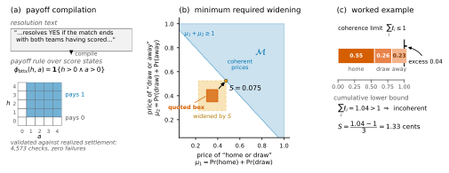

A Payoff-Compiled Audit of Dynamic Coherence in Linked Prediction-Market Order Books
National University of Science and Technology POLITEHNICA Bucharest
Can the prices of linked claims all fit one probability distribution? We turn settlement rules into a joint consistency test and measure what changes after a goal.

Main finding
After goals, linked quotes become less compatible.
Corrected increase in the coherence radius
+0.425 cents per bound
95% match-level confidence interval [0.316, 0.538]
Measured 6 to 30 seconds after a goal, across 125 isolated goals in 51 evaluation matches. The corrected increase is positive in 45 of those matches.
The paper
Abstract
In this paper, we audit probabilistic coherence across contracts resolving on a shared outcome. A resolution-rule compiler maps football contracts to payoff vectors over a provably sufficient finite score state space. A linear program computes the coherence radius: how far every displayed bid-ask bound must move outward before one common outcome distribution can price all contracts at once. Unlike pairwise checks, the test is joint across the linked system and returns one quantity in cents per bound. We apply it to 2,830,249 order-book files captured from Polymarket across 104 matches at the 2026 FIFA World Cup, with approximately 46 contracts per match. Analysis choices fixed on 49 development matches were applied to 55 held-out matches. The original confirmatory estimate was +0.436 cents. Payoff corrections after holdout inspection give +0.425 cents (95% match-level confidence interval 0.316 to 0.538) across 51 matches with isolated goals in the 6-30 seconds after a goal, positive in 45 of 51 matches. Diagnostics use the registered specification. Although the mean is sub-tick, the incoherent share, the share of goals whose window-mean radius exceeds 0.25 cents, a quarter of the median tick, rises from 12.8% to 59.2%; the measured quantity is temporary incompatibility among displayed quotes, not executable arbitrage or private beliefs. The response fades within two minutes and is near zero around scheduled and lower-score-relevance events. A coherent-belief null on each contract's active tick grid produces no increase; excluding exact-score contracts leaves a smaller +0.079 cents.
Code & replication
Check the numbers. Redraw the figures.
The repository contains the analysis code, pinned requirements, derived result files and verification records. Readers can reproduce the reported numbers and figures from those supplied results, offline after setup.
The 23.70 GB raw corpus is not included. Rebuilding the derived result files from raw order books is not supported by this release.
For the original paper-associated files: view the fixed snapshot or download its ZIP.
Reference
Cite this work
@article{BurzChiru2026Coherence,
author = {Burz, Silviu and Chiru, Costin-Gabriel},
title = {A Payoff-Compiled Audit of Dynamic Coherence in Linked Prediction-Market Order Books},
journal = {IEEE Access},
year = {2026},
doi = {10.1109/ACCESS.2026.3746471},
url = {https://doi.org/10.1109/ACCESS.2026.3746471}
}